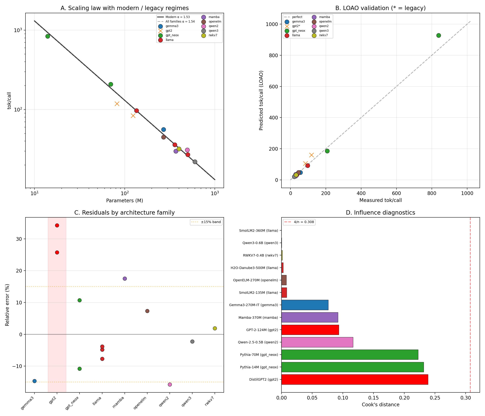
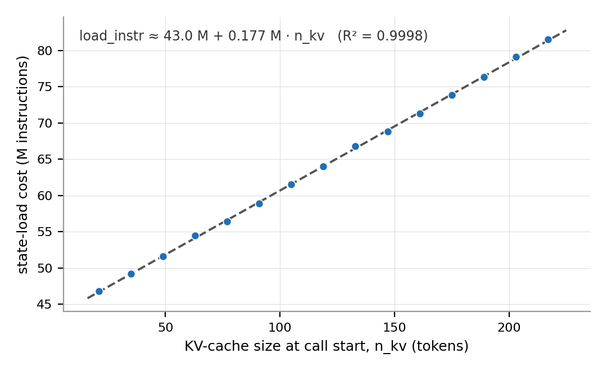

Authors: Julien Aerni¹, Siméon Fluck², Dustin Becker³
Affiliations: ¹ Meotis Sàrl, Neuchâtel, Switzerland — ORCID 0009-0001-7872-1057. ² Kaizen Corp SA — ORCID 0009-0002-8215-7150. ³ ORIGYN Foundation — ORCID 0000-0002-8505-0597.
Date: July 2026
Categories: cs.DC (primary), cs.LG, cs.PF (cross-list)
ACM CCS: Computing methodologies → Machine learning; Computer systems organization → Distributed architectures.
Keywords: on-chain LLM inference; Internet Computer Protocol (ICP); blockchain AI; decentralized AI; verifiable AI; WebAssembly (WASM) SIMD; deterministic inference; LLM scaling law; instruction budget; quantization; ternary weights; TQ2_0; BitNet; matmul dominance (MUL_MAT); smart-contract inference; stateful multi-call inference; small language models (SLM); edge LLM; llama.cpp
TL;DR. On the Internet Computer (ICP), large
language model (LLM) inference inside a smart-contract canister is
bounded not by hardware throughput but by a deterministic per-call
instruction budget of about 40 billion metered units. We calibrate a
decode cost model, tok/call ≈ B / (α_eff × 2P); show that
the cost coefficient is software-determined — a 2.9× gap between two
forks on identical mainnet weights; produce end-to-end evidence
consistent with the ternary floor of the measured decode path (α_eff ≈
1.00 published-parameter; α_exec ≈ 1.17 executed-FLOPs) using a custom
TQ2_0 WebAssembly (WASM) SIMD kernel, with byte-identical outputs across
a local replica, the Swiss Subnet, and a standard ICP mainnet subnet;
and model the per-session IO tax so that the compute budget of stateful
multi-call workloads can be planned analytically.
Companion artifact. The companion archive’s
artifact/ directory (MIT code, CC BY 4.0 data; archived at
Zenodo DOI 10.5281/zenodo.20607598 and public at GitHub
Simlowker/instruction-bounded-inference-artifact) contains
the calibration registry (49 registry rows plus the on-chain measurement
CSVs, spanning local dfx, ICP mainnet, and Swiss Subnet),
variance-verified anchors, coherence audits, per-operation profiling,
multi-call IO fits, source pins
(artifact/notes/source_pinning.md), and a source-backed
execution-boundary note
(artifact/notes/blockchain_ai_execution_boundaries.md). The
companion reproduction repository
instruction-bounded-inference-artifact contains the
end-to-end local rebuild and re-benchmark procedure for the 2.9× fork
gap (REPRODUCE.md) and its 2026-05-19 result log
(results/rebench_2026-05-19.md). Every load-bearing numeric
claim below cites an explicit CSV or summary-table path; the full
claim-to-evidence mapping lives in
CLAIMS-EVIDENCE-MATRIX.md.
LLM inference on Internet Computer Protocol (ICP) canisters runs
under a hard per-call budget of B = 40 × 10⁹
instruction-cost units, not wall-clock time. Throughput is therefore
bounded by executed instructions, not DRAM bandwidth — the
instruction-bounded regime. The motivating gap: the same Qwen
2.5 0.5B Q8_0 (8-bit uniform integer) model, on the same ICP mainnet
canister, yields 10 tok/call on the onicai baseline and 29 tok/call on
our fork. The 2.9× gap is software, not hardware.
(R1) Decode cost model. Decode follows
tok/call ≈ B / (α_eff × 2P), where α_eff is
the effective cost coefficient at the published-parameter count
2P — a deployment-stack property computable from a model
card, not a constant. Across 11 modern decoder models from 8 families,
α_eff = 1.53 (95% bias-corrected bootstrap CI [1.37, 1.65];
leave-one-architecture-out — LOAO — MAPE 7.7%, model-weighted). Under
the executed-FLOPs convention (embedding-table lookups excluded), the
physical coefficient α_exec clusters at 1.54 (CV 9.3%) for
9 of the 11 models; the two Pythia models — the fit’s only gpt_neox
entries, d ≤ 512 — sit above it (α_exec 2.15/3.12), an overhead effect
the published-parameter convention masks; at n = 2, dimension and family
are confounded. Legacy GPT-2 code paths form a separate α ≈ 2.0 regime
under both conventions.
(R2) Matmul dominates. The gap reproduces on mainnet; matmul accounts for 98.7% of decode cost on the profiled Pythia-70M Q8_0 view (98.3% on the Qwen 0.5B Q8_0 SIMD characterization row, §3); per-element unstructured sparsity is provably counter-productive on the measured integer paths (Theorem 1). Swiss Subnet (SSN) [8] deployments stay within 7% of local calibration.
(R3) Floor evidence. A purpose-built TQ2_0 (2-bit
ternary in the GGUF binary format used by llama.cpp [10]) WASM SIMD path
on purpose-trained TriLM models decodes at the empirical floor of the
measured decode path: α_eff = 1.03 at 560M
(α_exec = 1.17 under executed FLOPs), with a coarse
integer-token consistency check at 3.9B (N_MAX = 5,
asymmetric −17%/+0.2% resolution, implying α_eff ≤ 1.002,
α_exec ≤ 1.04) — and byte-identical outputs across a local
replica, 13-replica Swiss Subnet consensus, and a standard ICP mainnet
subnet. The floor is an observed property of single-token decode on this
stack, not a cost-table minimum — isolated ternary kernels bench at
α_kernel = 0.817 — and the proximity of the published-parameter value to
exactly 1.0 is partly a convention coincidence (§2, §5.1). The evidence
spans one model family and one format; we do not claim closed
saturation.
Three secondary results compose the law into deployment decisions.
(S1) Uniform Q8_0 stays on the Pareto frontier on
SmolLM2-135M and Qwen 0.5B: no mixed-precision variant strictly
dominates it, while ΔPPL vs F16 remains tiny. (S2)
Multi-call sessions pay a per-call IO tax; a hybrid Mamba+Transformer
baseline halves the per-token slope. (S3)
EmbeddingGemma-300M Q4_0 (4-bit uniform integer GGUF) on SSN runs at
α_embed ≈ 0.53, 126 input tok/call — retrieval fits the
regime better than long-form decode.
Running an AI language model on a blockchain is fundamentally different from running it on a GPU. On the Internet Computer (ICP), a smart contract (a “canister”) gets a fixed, deterministic compute budget per call — roughly 40 billion low-level instructions — and the call fails if it exceeds that budget. This paper measures what that constraint means for large language model (LLM) inference in practice. We find a simple scaling law for how many tokens a model can generate per call; show that rewriting the software path (not changing the hardware) can almost triple output; build a ternary-weight WebAssembly (WASM) kernel whose measured cost sits at the floor of the current decode path, with bit-identical outputs across three independent execution environments; and quantify the extra cost of keeping conversation state across calls, so that the compute budget of a multi-call on-chain session can be planned analytically. Whether today’s sub-billion-parameter on-chain models are good enough to make useful agents is a separate, open question (§7.3). The practical recipe: choose the model for quality — today the binding constraint — choose its parameter count and quantization from the instruction law, optimize the matrix-multiplication (matmul) kernel, and treat saved session state as part of the budget.
We began from a broader blockchain question: can useful AI inference run natively on-chain, inside the consensus boundary, rather than through off-chain workers, oracle submissions, proof systems, or precomputed vectors? In the prior-art review that led to this paper, the relevant systems split into two execution boundaries. Some study verifiability, gas costs, or hybrid on/off-chain execution [14, 19, 20]. Others demonstrate native on-chain inference in specific settings, or propose WASM-based blockchain deployments [9, 21], but without a first-order throughput law for decoder execution inside a consensus-metered runtime.
That boundary distinction became the real problem statement of this paper. We are not asking whether “blockchain AI” exists in some broad orchestration sense; we are asking what happens when the model forward pass itself runs under consensus-enforced compute metering. In this study, ICP is the environment where that question becomes directly measurable: deterministic in-consensus WebAssembly execution [5, 6], an explicit per-message compute budget [7], and enough budget to run sub-billion-parameter models end-to-end. That is why the paper centers on ICP while treating the underlying question as broader than ICP itself.
On native hardware, fixing the model, the quantization, and the machine fixes throughput to within a few percent. On ICP, it does not. Qwen 2.5 0.5B Q8_0 generates 10 tokens per update call on the onicai fork [9] and 29 tokens per update call on our fork, despite running in the same mainnet canister framework, on the same GGUF weights, under the same 40-billion-instruction message cap.
Once hardware, weights, and quantization are fixed, the remaining explanation is the software path: kernel choice, SIMD integration, dequantization strategy, and the micro-cost of the executed compute graph. Instruction-metered runtimes [5, 6, 7] are therefore governed by different optimization logic than CPUs and GPUs [1, 2, 25]: the dominant cost is executed instructions, not DRAM bandwidth.
This paper answers four questions in order. Each is addressed in one or two sections, and every load-bearing number resolves to a named CSV row in the companion artifact.
The regime distinction is structural:
| Bandwidth-bound | Instruction-bound | |
|---|---|---|
| Dominant cost | DRAM bandwidth | Executed instruction count |
| Hard budget | Wall-clock (soft) | 40 B instructions (hard) |
| Winning quantization | Fewer bits/weight | Fewer instructions per MAC |
f32.mul vs i32.mul |
Identical | 2× per opcode table (scalar; SIMD
f32x4/i32x4 are priced equal — §4.2) |
| Main hotspot | Weight loading | Matmul alone (98.3-98.7% across profiled views) |
We model the instruction budget rather than the memory ceiling because metering is the runtime’s protocol-level primitive — the constraint that scales with parameter count and prices every call — whereas the wasm-heap and page-access limits that currently bind deployments at sub-1B scales (§6.3, §8) are implementation ceilings of the present runtime build.
The qualitative regime distinction — executed instructions,
not DRAM bandwidth, as the binding cost — plausibly extends to other
discretely-metered runtimes: blockchain canisters [5, 7], fuelled WASM
(Wasmtime set_fuel, WasmEdge gas), and possibly
zero-knowledge VMs [23, 24]. The quantitative results here (β,
the f32/i32 ratio, α_eff, the matmul-dominance share) are calibrated to
the ICP opcode cost table and are not claimed to transfer numerically;
constraint-counting zkVMs in particular have a different cost structure
(proving cost can be super-linear in sequence length), where the linear
2P relation need not hold. All measurements in this paper
are on the ICP/SSN stack. What transfers is the method, not the
constants: on another discretely-metered runtime, re-derive
B (the per-invocation budget), re-measure the metering
overhead β on a tight-loop microbench, and re-fit
α_eff from a small model ladder; the regime prediction is
that α_eff clusters by software path rather than by
architecture.
We establish three main results (R1–R3) and three secondary results (S1–S3), all traced to the artifact’s measurement registry (49 rows) and on-chain CSVs. Prior on-chain ML work [14, 19, 20] includes on-chain inference, gas-cost modelling, and verifiability-oriented system design, but does not provide a first-order scaling law for native instruction-metered decoder throughput on a live ICP/WASM canister stack. Concurrent on-chain inference efforts [9, 21] establish that native deployment is possible, but they describe systems and boundaries rather than a parametric law. The closest prior system is opML [28], which runs the LLM forward pass off-chain and re-executes only a single challenged step on-chain inside a fraud-proof VM; its metering is therefore lazy — engaged only when a result is disputed (the multi-phase variant additionally verifies phase transitions with on-chain zero-knowledge checks, a hybrid within the lazy family) — whereas the ICP setting meters every replica’s full forward pass on every update call, eagerly, and our contribution is a throughput cost model rather than a verification protocol. Optimistic-TEE-rollup inference [29] and deterministic-WASM execution [30] target adjacent verifiable-compute boundaries. The practical decision boundary between these designs is the trust root and the latency budget: native in-consensus execution is warranted when the forward pass itself must be a consensus fact — no hardware enclave as trust anchor [29], no challenge window before finality [28], no prover in the loop [24] — and it is dominated by TEE or off-chain-plus-proof designs when model quality or interactive latency is the binding constraint, since the measured envelope here is sub-1B models at tens of tokens per call (§6.2, §7.3). The novelty claimed here is therefore boundary-specific: native decoder execution under consensus metering, measured as a throughput law, not “blockchain AI” in the broad sense. On-chain embedding offerings typically store precomputed vectors or rely on off-chain workers; our encoder case study (§7) runs the full forward pass inside the consensus boundary and is framed as a systems demonstration, not a claim of priority.
ICP canisters execute WebAssembly with deterministic instruction
metering [5, 6]. Each opcode has an explicit cost per the replica
instrumentation cost table [6]; one update call may consume at most
B = 40 × 10⁹ ICP cost units [7]. Two asymmetries matter for
inference. Scalar f32 arithmetic is priced 2× above scalar
i32 under the ICP opcode cost table (f32.mul =
2, i32.mul = 1); at the SIMD level, however, the table
prices f32x4.mul and i32x4.mul identically
(both 2 — instrumentation.rs, cost table inspected at
commit eeec0fd29765, 2026-05-08). The reconciliation with
the observed kernel ratio therefore has two steps: the table-level
asymmetry of the measured mul-add kernels is ≈ 4:3 (from the surrounding
instruction mix, not the multiplies), and the metering instrumentation
block that dominates a tight inner loop flattens that residual to the
observed 1.05×
(artifact/data/kernel/matmul_bench.csv). If anything this
strengthens §4.2’s conclusion: opcode-mix engineering has even less
leverage than a scalar reading of the table suggests. We derive
β = 1.844 for tight SIMD kernels from an empty-loop
microbench — one measured quantity (the metered empty-loop cost,
Empty_loop_metering row of matmul_bench.csv)
combined with one stored accounting estimate (the unmetered
per-iteration baseline); β is the metering-overhead
multiplier on a tight SIMD inner loop. The full derivation, and the
reconciliation between the 2× opcode-table cost and the
1.05× observed SIMD-kernel ratio, is given in
artifact/notes/beta_derivation.md.
For decoder-only transformers in the calibrated regime, FLOPs per
generated token are well-approximated by 2P [16] (with [1,
2] providing the inference-economics and roofline framing). We decompose
per-token cost as
C_token ≈ α_eff × 2P,
and therefore decode throughput as
tok/call ≈ B / (α_eff × 2P).
We distinguish the cost coefficient along two axes. Along the
measurement axis: α_kernel (isolated matmul
benches, square matrices, random data), α_eff
(end-to-end decode throughput; folds in dequantization, dispatch,
tiling, metering, and framework overhead; α_eff > α_kernel), and
α_embed (encoder forward passes). Along the
counting-convention axis: α_eff divides by
2·P_published — every number in this paper uses this
convention unless suffixed — while α_exec divides by
executed FLOPs only: P_exec excludes the input
token-embedding table (a per-token row lookup) whenever a separate
output head exists, and any learned position embeddings
(artifact/notes/alpha_exec_convention.md; recompute in
artifact/results/current/scaling_law/alpha_exec.csv). α_eff
is the deployment predictor — computable from a model card; α_exec is
the physical quantity — invariant to export-duplicated stored tensors.
For tied-embedding models, the majority of the calibration set, the two
coincide.
α_eff is not a constant of nature. It is a property of the deployment stack: family, quantization, compiler, metering, and implementation. On the current stack, α_eff resolves into three distinct clusters:
The floor is load-bearing, so we state precisely what it is — and
what it is not. Setting α_eff = 1 corresponds to one metered unit per
FLOP at the 2P count (equivalently, two units per
multiply-accumulate, since 2P counts multiply and add
separately). It is not a cost-table minimum: fused SIMD
instructions retire several MACs at once, and both the isolated ternary
kernel bench (Ternary_DOT_i32x4dot_x4, α_kernel = 0.817,
artifact/data/kernel/matmul_bench.csv) and the batched
encoder path (α_embed ≈ 0.53, §7.1) measure below 1 on the same cost
model. What makes 1 the operative floor for decode is
structural: single-token matrix-vector decode streams every weight
through load + dequantize + MAC exactly once per token, so the
per-weight load/dequant instructions cannot be amortized — unlike
batched encode, where they are shared across the token batch, and unlike
matrix-matrix kernel benches, where operand reuse hides them. On the
currently-integrated decode kernels, that per-weight overhead lands the
end-to-end ternary coefficient at α_exec ≈ 1.17 (α_eff ≈ 1.00 under the
published-parameter convention — the roundness of that value is partly a
coincidence: TriLM’s untied input table inflates the
2·P_published denominator), and no end-to-end decode
deployment on this stack is observed below it under either convention.
The claim “the TQ2_0 path reaches the floor” (§5) should therefore be
read as measurement evidence that no large remaining margin is visible
on that measured decode path at integer-token resolution — an
empirical floor of the current path, not a bound future kernels
cannot cross: the ternary-native DOT ×4 microkernel already measures
α_kernel = 0.817 on isolated benches (§5.3), and integrating it at model
level is the obvious next step.
We calibrate the law on local ICP deployments (dfx
0.31.0 — ICP’s canister CLI — fork build 17806d52), batch
size 1, binary search on maximum generated tokens before
EXCEEDED_INST_LIMIT. The calibration set is scoped to
modern decoder families on the current release line; GPT-2 rows are a
legacy sensitivity regime; TQ2_0 rows are discussed in §5 as a distinct
regime.
Table 1. Representative calibration rows
(artifact/data/models.csv,
artifact/data/onchain/local.csv). The first seven rows are
the modern-regime calibration examples used to illustrate the main
cluster; the final two GPT-2 rows are legacy sensitivity examples shown
for contrast and are not part of the modern-only summary statistics
reported below. The modern-only fit comprises eleven
models: these seven rows plus four not shown here for space —
Pythia-14M, Mamba-370M, Qwen3-0.6B, and RWKV7-0.4B. Four Transformer
anchor points (†) are variance-verified with 3 repetitions each (CV <
1.05% under the binary-search protocol described above; for
transparency, variance.csv also retains an earlier
same-evening SmolLM2-135M session recording [150, 150, 75] — CV ≈ 35% —
traced during revision to a different metric: its values exceed the
single-call instruction boundary (94–97 tokens across builds; a single
-n 150 call traps IC0522), consistent with
cap-limited multi-call totals recorded before the protocol was fixed —
the single-call impossibility is proven, the multi-call attribution is
inference
(artifact/results/paper_1_5/raw/variance-rootcause-2026-07-09/);
the adopted anchors were re-measured minutes later at [97, 97, 97] under
the single-call protocol used throughout, and the reported CIs are
conditional on that protocol); a fifth variance-verified point,
Mamba-370M, is retained in the modern fit — it carries
the largest per-architecture LOAO error (18.3%, reported in §3) — not
excluded. All other rows are single-run binary-search estimates.
| Model | Arch | Params | tok/call | α_eff | α_exec | Notes |
|---|---|---|---|---|---|---|
| Pythia-70M† | gpt_neox | 70 M | 208 | 1.37 | 2.15 ◇ | Q4_0 SIMD, untied |
| SmolLM2-135M† | llama | 135 M | 97 | 1.53 | 1.53 | Q4_0 SIMD |
| Gemma3-270M-IT† | gemma3 | 270 M | 56 | 1.32 | 1.33 | Q4_0 SIMD |
| OpenELM-270M | openelm | 270 M | 45 | 1.65 | 1.64 | Q4_0 SIMD |
| SmolLM2-360M | llama | 360 M | 36 | 1.54 | 1.54 | Q4_0 SIMD |
| Qwen 2.5 0.5B† | qwen2 | 494 M | 31 | 1.31 | 1.31 | Q4_0 SIMD |
| H2O-Danube3-500M | llama | 500 M | 27 | 1.48 | 1.60 | Q4_0 SIMD, untied |
| DistilGPT2 | gpt2 | 82 M | 119 | 2.05 ⚠ | 2.07 | legacy regime |
| GPT-2-124M | gpt2 | 124 M | 84 | 1.92 ⚠ | 1.93 | legacy regime |
α_exec = executed-FLOPs convention (§2): identical to α_eff for
tied-embedding models; ◇ marks the small-dimension overhead regime (d ≤
512) that the published-parameter convention masks. Full recompute
incl. the four models not shown:
artifact/results/current/scaling_law/alpha_exec.csv.
Table 1b. Network and deployment rows measured on ICP mainnet or Swiss Subnet (SSN). These rows are included in the artifact, but they are not all used in the modern-only scaling-law fit above: some are same-build network confirmations, some are build-specific deployment observations, some are systems demonstrations, and some are negative/operational evidence.
| Model / setup | Env | Quant / mode | tok/call or outcome | Role in paper |
|---|---|---|---|---|
| Qwen 2.5 0.5B, our fork | ICP mainnet | Q8_0 | 29 | Production 2.9× software-gap result |
| Qwen 2.5 0.5B, onicai baseline | ICP mainnet | Q8_0 | 10 | Baseline for same canister / weights |
| SmolLM2-135M | SSN | Q4_0 | 97 | Same-band network validation |
| Gemma3-270M-IT | SSN | Q4_0 | 52 | Same-band network validation (−7% vs local) |
| Qwen 2.5 0.5B | SSN | Q4_0 | 30 | Same-band network validation (−3% vs local) |
| Qwen3.5 0.8B | SSN | Q4_0 | 13 | Highest-quality SSN decoder row; crashes ICP mainnet |
| Qwen3.5 0.8B | SSN | TQ2_0 | 18 | Throughput valid, quality invalid; negative result |
| Qwen3.5 0.8B-21L | SSN | Q4_0 | 18 | Pruning throughput valid, quality invalid |
| Qwen3.5 0.8B-12L | SSN | Q4_0 | 20 | Pruning throughput valid, quality invalid |
| Qwen3.5 0.8B-12L | SSN | TQ2_0 | 25 | Retracted throughput gain: quality invalid |
| Qwen3.5 0.8B | SSN | IQ2_XXS | 5 | Aggressive quantization; not used as evidence |
| Falcon-H1-Tiny-90M | SSN | Q8_0 | 199 | Build-specific hybrid Mamba+Transformer observation; used for §6.2 IO analysis, not same-build calibration |
| TriLM 560M | SSN | TQ2_0 | 34 | Ternary floor validation, 3 reps, byte-identical |
| TriLM 3.9B | SSN | TQ2_0 | 5 | Ternary floor validation, 3 reps, byte-identical |
| SmolLM2-135M | SSN | BASE-Q8_0 | 95 | Mixed-precision Pareto-winner cross-env validation (§6.1) |
| Qwen 2.5 0.5B | SSN | BASE-Q8_0 | 28 | Mixed-precision Pareto-winner cross-env validation (§6.1) |
| Qwen 2.5 0.5B | SSN | BASE-Q8_0, 10-turn | 100 total tokens | Multi-call session demo (§6.2) |
| EmbeddingGemma-300M | ICP / SSN | Q4_0 encoder | 126 input tok/call | Encoder systems demonstration |
The full network tables are
artifact/data/onchain/icp_mainnet.csv and
artifact/data/onchain/ssn_mainnet.csv; Paper 1.5 deployment
rows are also summarized in
artifact/data/paper_1_5/ternary_measurements.csv,
mixed_precision_measurements.csv, and
multicall_characterization.csv.
Table 1c. Additional Qwen 2.5 0.5B canister characterization. These rows explain the software gap and prompt-length limits; they are not additional same-status calibration anchors.
| Measurement | Value | Interpretation |
|---|---|---|
| Q8_0 SIMD, local canister | 30 tok/call | Same optimized path as the 29 tok/call mainnet row, within build/network drift |
| Q8_0 scalar, local canister | 6 tok/call | Scalar path is practically unusable at 0.5B scale |
| F16, local canister | ~3 tok/call | No F16/F32 SIMD path; quantized SIMD is required |
| Decode profiling, Q8_0 SIMD | 12.327B instructions / 10 tokens | α_eff = 1.25 in the optimized path (494 M nominal) |
MUL_MAT share, same profile |
98.3% | The Qwen profile independently confirms matmul dominance |
| Estimated scalar α_eff | ~6.75 | SIMD compresses effective cost by about 5.5× for Qwen |
| Prompt ~5 tokens | 0 prefill calls; ~28–30 gen tok/call | Short guardrail prompts can stay single-call |
| Prompt ~50 tokens | 2 prefill calls; ~20 gen tok/call | Chat-style prompts pay visible multi-call prefill cost |
| Prompt ~120 tokens | 4 prefill calls; ~10–17 gen tok/call | Long prompts are latency-bound before generation |
The underlying registry rows are in
artifact/results/raw/core_measurements_v2.csv; the network
rows are in artifact/data/onchain/. The long-form
measurement inventory is preserved in
artifact/notes/paper1_long_measurement_inventory.md for
reviewers who want the distinction between fit rows, deployment rows,
negative results, and canister-characterization rows.
Because α_eff is defined as B / (N · 2P), the
relation tok/call ≈ B/(α_eff·2P) is a re-parameterization
of the standard 2P FLOP count [16], not an independently
discovered law; a log-log slope near −1 is implied by the convention
whenever α_eff varies far less than P. The falsifiable
empirical content is therefore (a) how tightly α_eff clusters across
heterogeneous families, and (b) whether the other families’ coefficient
predicts a held-out architecture’s throughput (LOAO). Fit statistics on
the modern-only regime
(artifact/results/current/scaling_law/, via
artifact/scripts/analyze_scaling_law.py; fit membership is
declared in the registry — role=calibration rows with quant
∈ {Q4_0, Q8_0} and SIMD enabled, excluding degenerate-output and
instruct variants; the quant-homogeneity clause also excludes the sole
Q3_K_M row, Bloomz-560M, whose inclusion would move the median from
1.527 to 1.535, +0.5%):
2P
exponent, not independent validationalpha_exec.csv, script
compute_alpha_exec.py). At n = 2 — both models gpt_neox —
dimension and family are confounded, and legacy GPT-2 (d = 768, α_exec ≈
2.0) shows dimension alone is not the controlling variable; we report
the split as an observation, not a law. The LOAO test operates on the
published-parameter convention — the deployment setting, where only
public counts are available — and covers all 11 models.
Legacy GPT-2 rows land at α ≈ 2.0 — systematically above the modern
cluster, and only on ICP; on native Apple M4 Max the same models show no
regime split (artifact/data/native/m4_max_baseline.csv),
locating the penalty in the llama.cpp GPT-2 code path on this stack
rather than in the architecture. Conventions matter here in an
instructive way: GPT-2’s GGUF exports store a duplicated output head
(+24–32% audited stored tensors; discrepancies.csv), which
under a stored-tensor reading would compress α toward the cluster (≈1.4)
— but duplicated tensors are not executed twice, and under the
executed-FLOPs convention GPT-2 remains at α_exec ≈ 1.9–2.1 (tied head;
learned positions excluded). The legacy penalty is real under the
physical convention; we retain GPT-2 as a sensitivity regime, excluded
from the modern fit.
Under the published-parameter predictor, architecture details (depth, hidden size, vocabulary) add little once total parameter count is fixed — though not nothing: the depth-pruned AMD-LLaMA-135M runs ≈29% faster than same-size SmolLM2 (excluded from the fit for degenerate output; registry row M22), and under α_exec the two smallest-dimension models separate (above). Danube3-500M and Qwen 2.5 0.5B occupy very different layer/hidden geometries but share a throughput band because they share a parameter band. Non-Transformer coverage is preliminary: RWKV-7 [12] lands consistent with the cluster; Mamba-370M [13] drifts between builds (α = 1.54 → 1.80, −14% tok/call) and we treat its result as suggestive, not settled.
Sensitivity to the parameter convention.
2P uses published parameter totals, applied uniformly; the
α_exec treatment of §2 is the principled resolution of convention
questions. Stored-tensor audits are file-dependent — the Qwen
2.5 0.5B Q8_0-instruct export stores a duplicated head (630 M stored vs
494 M published) while its Q4_0/TQ2_0 exports store 494 M
(discrepancies.csv) — but stored duplication does not
change execution: α_exec is invariant to it. The
residual convention exposure is therefore confined to α_eff’s role as a
predictor, where the published count is exactly what a deployer
has, and the LOAO error already prices in the untied-model spread.
Absolute tok/call numbers are build-sensitive within ±15% between March and April 2026 builds. The scaling-law structure — slope, model ordering, α_eff median — is stable across those builds; calibration points must be tied to a concrete WASM hash.
We measured the same Qwen 2.5 0.5B Instruct Q8_0 GGUF (SHA-256
ca59ca7…) on ICP mainnet canister
zmm32-7yaaa-aaaad-qlqsq-cai under the same prompt and the
same 40 B per-call instruction cap:
| Fork | WASM hash | max gen tok/call | Result |
|---|---|---|---|
| Ours | ef8f9d78… |
29 | OK |
| onicai [9] | 6c77a958… |
10 | OK |
The 2.9× gap is a production result, not a local artefact
(artifact/data/onchain/icp_mainnet.csv) — a single-run,
one-model, one-prompt mainnet measurement (claims-matrix C4) whose
deterministic trap-boundary protocol and independent rebuild (below)
carry its reliability. Identical weights and identical boundary produce
a 2.9× throughput difference only because the software path differs.
Independent re-validation (2026-05-19). The
functional claim was re-validated on a local dfx replica using freshly
rebuilt WASMs from current public sources: Comoto fork at
Simlowker/gian@8cda13b (rebuild SHA-256
da112d99…) and onicai baseline at
onicai/llama_cpp_canister@v0.10.1 (rebuild SHA-256
b6ccbff0…). Using the identical Qwen 2.5 0.5B Q8_0 GGUF
(SHA-256 ca59ca7f…) and identical prompt and protocol, the
rebuild yields Comoto = 29 tok/call, onicai = 10 tok/call, ratio
= 2.9× — exactly matching the original 2026-04-09 mainnet
measurement. The original WASM ef8f9d78… is not
byte-reproducible: it was built from working-tree state that was never
committed to git (a .gitignore pattern shadowed 114
per-model .cpp files in src/models/; commit
668b48e later imported them as a corrective fix).
Byte-exact rebuild is therefore impossible, but functional behavior —
the claim itself — is fully reproducible from current public source by
any reviewer with dfx, ~50 GB disk, and ~30 min CPU; no ICP
cycles required. The end-to-end procedure is in the companion
instruction-bounded-inference-artifact repository, file
REPRODUCE.md; the reproduced 29-vs-10 result is logged in
results/rebench_2026-05-19.md in that repository.
What the 2.9× is made of. The gap is kernel-path vectorization, not hardware or weights: on the same build, the same Qwen Q8_0 runs at 6 tok/call on the scalar path and 30 tok/call with WASM SIMD enabled (Table 1c) — a ~5× spread that brackets the onicai baseline’s 10 tok/call between the scalar and fully-vectorized operating points. The dominant contributors on this stack are SIMD dispatch of the quantized matmul inner loops and the associated dequantization strategy (§4.2); everything else is bounded by the 1.3–1.7% non-matmul profiling share. We did not characterize the onicai fork’s exact kernel configuration, and the claim is about stack-dependence of α_eff, not baseline optimality: an equivalently-vectorized baseline would be expected to close most of the gap.
Per-operation profiling at ggml-operation boundaries on Pythia-70M
Q8_0 decode (artifact/data/profiling/per_operation.csv)
attributes:
| Operation class | Share of total cost |
|---|---|
MUL_MAT |
98.7% |
| All non-matmul work combined | 1.3% |
This sharpens the optimization picture. Integer normalization,
alternate attention formulations, and other non-matmul tweaks target ≤
1.3% of cost on the profiled Pythia-70M Q8_0 view (≤ 1.7% on the Qwen
0.5B Q8_0 SIMD profile reported in §3); residual kernel-table opcode-mix
differences (≈ 4:3 at the SIMD level — the 2×
f32/i32 gap is scalar-only, §2) are drowned by
metering overhead β = 1.844
(artifact/notes/beta_derivation.md). The only lever that
moves end-to-end throughput is effective matmul cost. Matmul-free
language modeling [18] is an orthogonal architectural response to the
same dominance pattern; for a decoder running in our metering regime,
eliminating matmul opcodes outright would change the cost decomposition
itself rather than reduce the coefficient.
Theorem 1. For any sparsity rate s ∈ [0, 1], per-element zero-checking strictly increases total instruction cost relative to a sparsity-oblivious matmul on the integer-matmul ICP WebAssembly paths measured here (TQ2_0, Q4_0, Q8_0).
Proof sketch. The i32.load of w_i
is required by both the baseline MAC and the sparsity check, so it is
shared and not counted as overhead; the check inserts
i32.eqz (1) + br_if (2) = 3 additional ICP units per
weight. If w_i = 0, the check skips a MAC whose cost is 1
unit on the TQ2_0 ternary path (heavier on Q8_0/Q4_0 where the saving
stays ≤ 2). Net per zero on TQ2_0: +3 − 1 = +2; net per
non-zero: +3. Total additional cost on the ternary path:
N · (3 − s) > 0 for all s ≤ 1. The same
strict positivity holds a fortiori on heavier-MAC integer paths where
the per-zero saving never matches the +3 overhead. The SIMD variant
(16-lane zero-check) and the branchless select variant both
remain strictly positive under analogous counting
(artifact/data/kernel/matmul_bench.csv). □
Scope. The theorem covers per-element branching, SIMD
all-zero checking, and branchless select on the
integer-matmul paths in this study. It does not apply to
structured sparsity (N:M patterns with block-level skipping),
compressed formats (CSR/CSC), or bitmap indexing that amortizes the
check cost. F32-path sparsity is also out of scope: f32
opcode pricing differs and the per-MAC saving structure changes.
SSN Q4_0 deployments
(artifact/data/onchain/ssn_mainnet.csv) stay inside the
calibration band: SmolLM2-135M matches local at 97 tok/call, Gemma3-270M
within 7%, Qwen 2.5 0.5B within 3%. These deltas are consistent with
ordinary build and deployment variance, not a different governing
law.
The floor evidence in this section comes from one model family
(SpectraSuite TriLM [15]) and one format (TQ2_0); within that scope it
is measured at two scales 7× apart. We integrated a custom TQ2_0 (2-bit
ternary, weights in {−1, 0, +1}) WASM SIMD path — absent from upstream
llama.cpp [10] as of this writing — end-to-end into the inference
framework, and measured two purpose-trained ternary models on the same
canister build
(artifact/data/paper_1_5/ternary_measurements.csv,
artifact/results/paper_1_5/PHASE-1-SUMMARY.md). The broader
ternary-LLM line — BitNet-style 1-bit and 1.58-bit training [3, 22],
ternary scaling laws and efficient inference on the same TriLM suite
[31], ternary sparsification [17], edge-inference kernels [4], CPU SIMD
reorganizations for ternary inference [27], and recent
multiplication-free fused kernels and consumer-CPU ternary SIMD
frameworks [32, 33] — motivates the integer-matmul boundary we exploit
here; we differ in targeting a consensus-metered WASM canister rather
than native hardware:
| Metric | TriLM 560M | TriLM 3.9B |
|---|---|---|
| Params (GGUF-audited) | 569 M | 3 992 M |
| GGUF size (TQ2_0) | 195 MB | 1 113 MB |
| Architecture | 24 L × 1280 H | 30 L × 3072 H |
| N_MAX local dfx (3 reps) | 34 (CV 0%) | 5 (CV 0%) |
| N_MAX SSN mainnet (3 reps) | 34 (CV 0%) | 5 (CV 0%) |
| N_MAX ICP mainnet, standard subnet (3 reps, 2026-07) | 34 (CV 0%) | — |
| Implied α_eff (published-param) | 1.03 | 1.00 |
| Implied α_exec (executed FLOPs, §2) | 1.17 | ≤ 1.04 (one-sided) |
| Modern-regime baseline (α = 1.54, §3) | 22.8 | 3.3 |
| Speedup vs baseline | 1.49× | ≈1.5× |
| Coherence | 10/10 fluency | factual ✓ at N=5 |
The 560 M point is the tight anchor: N_MAX = 34 implies
α_eff ∈ (1.004, 1.034] — within 3% of the floor. The 3.9 B point is a
coarse consistency check, not independent floor evidence: at
N_MAX = 5 the integer-token resolution is asymmetric
(−17%/+0.2%), so the observation establishes α_eff ≤ 1.002
given the decode-path floor α ≥ 1, and distinguishes little
below it. We therefore read the pair as evidence consistent with the
floor on the measured TQ2_0 path, not as closed saturation. Under the
executed-FLOPs convention the same measurements read α_exec =
1.17 at 560 M and ≤ 1.04 at 3.9 B: the ternary
path sits far below the modern cluster (≈1.54) under both conventions,
and the decomposition becomes transparent — ≈0.5 units/FLOP of ternary
arithmetic (Theorem 1 accounting) plus unamortized per-weight
load/dequant. The proximity of the published-parameter values to exactly
1.0 is partly a coincidence of TriLM’s untied input table (§2). The
≈1.5× speedup over the modern-regime baseline is constant across the 7×
span, weakening the alternative explanation that the 560 M result was
inflated by small-scale inefficiency in the baseline.
A stronger consistency check than throughput matching is bit-for-bit
output agreement — and we now have it across three execution
environments. In April 2026, the 10-prompt TriLM 560M coherence
audit on the 13-node SSN canister diffed empty against the local dfx run
(artifact/results/paper_1_5/raw/trilm-560m-ssn-vs-mainnet-diff.txt),
and for TriLM 3.9B every token produced at N = 1..5 on SSN
matched the local output verbatim. In July 2026 we repeated the campaign
on a standard ICP mainnet application subnet (canister
zmm32-7yaaa-aaaad-qlqsq-cai, subnet 5kdm2-…),
this time with both sides of every diff archived
(artifact/results/paper_1_5/raw/mainnet-2026-07-09/):
N_MAX = 34 in 3/3 repetitions with the boundary trap at 35,
and the 10-prompt audit byte-identical between the local replica
and the mainnet canister — under an independently rebuilt GGUF
(a separate conversion pipeline, three months after the original) and a
newer canister build, with all completions word-for-word equal to the
April audit. Within a single subnet, replica agreement is
protocol-guaranteed — a divergent replica would break consensus — so the
novel content here is the byte-equality across environments, build
generations, and weight-conversion pipelines, which no protocol
layer guarantees; that equality is inconsistent with non-deterministic
kernel hazards (uninitialized vector lanes, FP reorder, replica-specific
code paths) on the measured paths. The TQ2_0 WASM SIMD kernel is fully
deterministic under live consensus on both production subnets.
On non-purpose-trained ternary weights, the same TQ2_0 path reaches
201 tok/call on Pythia-70M, giving 5.03
tok/MB — the highest throughput-per-megabyte observed in the
study (artifact/results/current/extended_analysis/). Note
what this row does not show: at 201 tok/call, Pythia-70M TQ2_0
runs at α_eff ≈ 1.41 (α_exec ≈ 2.2, consistent with its small-dimension
regime, §3) — well above the floor, and marginally below its own Q4_0
SIMD throughput (208 tok/call, Table 1). The floor of §5.1 is attained
by purpose-trained ternary models at sufficient scale on this path, not
by the TQ2_0 format per se. Q4_0 SIMD remains the best
absolute-throughput operating point for non-ternary models on the
calibration build (Table 1, Q4_0 31 vs Q8_0 30 for Qwen); the ordering
is build-sensitive — §6.1’s campaign build showed Q8_0 ahead, its Q4_0
value being the documented build regression — while §6.1’s Pareto
conclusion (uniform Q8_0 non-dominated) is robust to that drift. A
ternary-native DOT ×4 microkernel projects a 2.45× bench-level speedup
over F32 SIMD (artifact only; no model-level run yet).
The per-call law does not by itself say which quantization to pick.
We computed per-layer ΔPPL sensitivity on WikiText-2, generated six
mixed-precision variants per model (embedding→Q8, attention→Q8, first K
layers→Q8, top-ΔPPL layers→Q8) on a Q4_K_M base, and compared against
uniform Q4_0, Q5_K_M, Q8_0 on
SmolLM2-135M and Qwen 2.5 0.5B. Throughput rows in
artifact/data/paper_1_5/mixed_precision_measurements.csv;
perplexity rows in
artifact/data/paper_1_5/c2-ppl-smollm135-only.csv (SmolLM2)
and artifact/results/paper_1_5/raw/c2-ppl-qwen05-only.csv
(Qwen); joined summary in
artifact/results/paper_1_5/tables/c2-mixed-precision-summary.md.
Table 2. Pareto winners on both models. Qwen 0.5B Q8_0 size is reported as the Phase 2 local build (506.5 MB, matching the anchored throughput row); the Phase 3 SSN rebuild is 531 MB with byte-exact weights, differing only in metadata.
| Metric | SmolLM2-135M | Qwen 2.5 0.5B |
|---|---|---|
| Preferred frontier point | BASE-Q8_0 | BASE-Q8_0 |
| size (MB) | 144.8 | 506.5 |
| tok/call | 97 | 30 |
| PPL WikiText-2 | 13.603 | 11.680 |
| PPL WT2 (F16 baseline) | 13.574 | 11.674 |
| ΔPPL vs F16 | +0.029 | +0.007 |
| α_eff = B / (N · 2P) | 1.527 | 1.333 |
α_eff in this table uses rounded nominal parameter counts (135 M
/ 0.5 B), giving 1.527 / 1.333; on the registry’s nominal counts (134.5
M / 494 M) the values are 1.53 / 1.35 — the same convention as Table 1.
The Qwen Q8_0-instruct GGUF export audits at 630 M tensor-level
parameters (discrepancies.csv), on which its α_eff would be
≈ 1.06; see the parameter-convention sensitivity note in §3.
Uniform Q8_0 is the highest-throughput, lowest-PPL point
on both tested frontiers, but not the smallest. The precise statement
is: no mixed variant strictly dominates it. Q5_K_M is the
sole strictly-dominated variant. The ΔPPL-guided V4 variant
(top-K fragility layers at Q8, rest at Q4_K_M) is the best mixed variant
and remains relevant under tight size budgets.
Three caveats. First, neither hidden dim (576, 896) is divisible by
256, so llama-quantize emits many
q4_K/q5_K → q5_0/q8_0 fallbacks; the mixed-precision
landscape likely differs on hidden dims in {512, 1024, 2048}. Second,
Qwen’s α_eff = 1.33 is lower than SmolLM’s 1.53 despite larger hidden
dim. Plausible contributors: GQA (grouped-query attention; fewer K/V
FLOPs), attention biases not counted in 2P, and SmolLM2’s
tied embedding making 2P undercount its LM head. Both
values remain inside the modern-regime CI. Third, cross-campaign build
drift: this campaign’s absolute BASE-Q4_0 throughput for Qwen (20
tok/call on the campaign build) sits 35% below the Table 1 calibration
value (31) — a model-specific regression of that build line (SmolLM2
moved only 97 → 95 on the same build), re-measured at 30
tok/call on the current release build (−3%, inside the ±15%
envelope; probes and provenance checks in
artifact/results/paper_1_5/raw/qwen-q4-build-drift-2026-07-09.md).
Within-campaign, same-build comparisons — the Pareto analysis above —
are unaffected; absolute values should always be read against the pinned
WASM hash (Limitation 4).
Validated on SSN. Pareto-winner
BASE-Q8_0 on SSN mainnet: SmolLM2-135M N_MAX = 95 (local =
97, −2%, byte-exact 3/3 reps); Qwen 2.5 0.5B N_MAX = 28 (local = 30,
−6.7%, byte-exact 3/3 reps). Source:
artifact/results/paper_1_5/tables/c2-c3-ssn-validation-summary.md.
A single 40 B call is often not enough for agentic workloads. Using
--prompt-cache-all, a session of N calls pays
two extra per-call IO costs the single-call formula ignores:
save_instr (serialize the growing KV cache at end-of-call)
and load_instr (deserialize at start of calls 2..N), both
in raw instructions. These reduce the effective per-call decode budget,
giving an extended session formula:
tok/call_effective ≈ (B − IO_instr(n_kv, cache_type)) / (α_eff × 2P)
tok/session ≈ N × tok/call_effective
with
IO_instr(n, c) = save_instr(n, c) + load_instr(n, c) ≈ (a_s + b_s · n) + (a_l + b_l · n)
fitted from instrumented canister runs (an instrumented build — ggml
commit bb238b9 — logs save_instr and
load_instr per call). Table 3’s campaign fit resolved the
Qwen load cost to a near-constant (b_l ≈ 0 over that
build’s operating range); a dedicated 15-point sweep on the current
release build (one growing session, n_kv 21–217) measures
the load slope directly:
load_instr ≈ 43.0 M + 0.177 M · n_kv, R² =
0.9998 (figure below;
artifact/results/paper_1_5/raw/bl-sweep-2026-07-09/). The
load slope is real but small — ≈ 19% of the save slope — so the
near-constant reading holds at small caches, while the growth term
belongs in long-session budgets. Absolute IO constants are
build-specific (the current build loads ≈ 10× cheaper than Table 3’s
campaign build at comparable cache sizes); the linear structure
is the transferable finding. The near-unity R² reflects a deterministic
metered runtime over evenly-spaced points from one session, one model,
and one build — it certifies linearity over the measured range
(n_kv 21–217), not cross-model generality, and beyond that
range the formula is extrapolation. At measured cache sizes the two-term
tax is a low single-digit percentage of B; its significance
for session budgeting is predictability, not magnitude.

Units:B and IO_instr in ICP instruction-cost
units; α_eff × 2P in instructions per token.
Table 3. Fitted IO parameters
(artifact/data/paper_1_5/multicall_characterization.csv,
artifact/results/paper_1_5/tables/c3-fit-parameters.json).
| Model / cache (f16) | a_s (M) | b_s (M/tok) | R² | load mean (M) | load CV |
|---|---|---|---|---|---|
| Qwen 2.5 0.5B Q4_0 (Transformer) | 26.7 | 0.951 | 0.998 | 425.6 | 0.02% |
| Falcon-H1-Tiny-90M Q8_0 (hybrid Mamba+T) | 276.3 | 0.519 | 0.972 | 108.3 | 3% |
Observations. The hybrid Mamba+Transformer baseline
(Falcon-H1-Tiny, in the broader family of hybrid-head SSM/attention
small models [26]) halves the per-token save slope (0.52 M vs 0.95 M)
and cuts the load cost ≈4× at campaign cache sizes (108 M vs 426 M means
on that build) — and a revision-round refit shows its load, too, grows
linearly rather than sitting at a constant: ≈ 0.166 M per cached token
across the campaign’s four steps (R² > 0.999, slope from consecutive
differences), of the same order as the Qwen current-build sweep slope
(0.177). Neither model eliminates per-token growth — attention blocks
still accumulate KV. The SSM advantage is partial, not the full “bounded
state” headline. --cache-type-k {f16, q8_0, q4_0} is
accepted at load_model but is a no-op on the current WASM
(KV allocated before the flag reaches the cache-swap path); a rebuild
exposing it at runtime is the obvious next lever. Re-attach latency is
dominated by load_model itself (~2.3 s wall-clock), not by
state IO
(artifact/results/paper_1_5/raw/c3-reattach-qwen05.log). A
10-turn chat demo on SSN (Qwen 2.5 0.5B Q8_0) completed 10/10 turns, 100
cumulative tokens, 41.12 s wall-clock, with narrative coherence
preserved under 13-node consensus
(c3-ssn-chat-demo-transcript.md).
For short-turn agents (cache ≪ 100 tok) the constant term dominates and Falcon-H1 wins the cold path by ~15%; for medium sessions (cache ~100 tok) by ~20%; for long chat (cache ≫ 500 tok) the slope difference becomes load-bearing. The extended session formula is the operative budget for any on-canister agentic workload.
Two ceilings bound the deployable envelope. First, on the tested SSN
wasm32 build we observed a practical wasm-heap ceiling near 900
MB; in the Qwen 0.5B Q8_0 load path, reducing to
-c 512 -b 512 (context and batch) brought the allocation
under that envelope and loaded cleanly. The background for non-ICP
readers: a wasm32 canister heap is bounded by a 32-bit WebAssembly
address space (theoretical 4 GiB), while stable memory is a separate
persistent store and current ICP documentation also distinguishes wasm64
limits. The observed ceiling therefore reflects current heap-side
allocations — weights staging, KV cache, compute buffers, framework
state, metering instrumentation, and scratch space — rather than a
single pool shared with stable memory. Treat 900 MB as a build-specific
operational observation, not a universal threshold. Second, an
IC0524 page-access trap triggers on some ≥
1 GB GGUFs during load_model, but not on raw size alone:
TriLM 3.9B TQ2_0 at 1 113 MB loads cleanly, while Qwen 2.5 1.5B Q6_K at
1 464 MB traps IC0524
(artifact/data/paper_1_5/ic0524_characterization.csv). The
failure is format-specific — ternary TQ2_0 is unusually friendly to the
ICP page-access pattern. A parallel IC0502 "unreachable"
trap at different sizes (Qwen 1.5B Q4_0 at 892 MB) is driven by
Wasm-runtime limits rather than stable-memory limits; the two failure
modes should not be conflated.
EmbeddingGemma-300M Q4_0 [11] runs end-to-end inside an SSN canister
(u2pva-3iaaa-aaaax-qaa7a-cai, 212 MB on disk) at about
126 input tokens per call, corresponding to
α_embed ≈ 0.53 under the published-parameter convention
(artifact/data/onchain/ssn_mainnet.csv embedding rows). The
apparent sub-floor coefficient is a convention artifact: 201.3 M of the
model’s 308 M published parameters are an embedding lookup table that
executes no FLOPs in the forward pass; under the executed-FLOPs
convention α_exec ≈ 1.61, inside the modern cluster
(§2; artifact/notes/alpha_exec_convention.md). The
per-input-token cost advantage over autoregressive decode is nonetheless
real — batched encode amortizes per-weight loads that single-token
decode cannot (§2) — so retrieval-style workloads fit the
instruction-bounded regime better than long-form chat generation. The
deployment is a systems demonstration (N = 1 model, small cross-lingual
sanity checks). It is not a claim of priority on the broader “on-chain
embedding” term: ecosystem projects under different system boundaries —
stored precomputed vectors, off-chain workers, oracle submissions — have
existed for some time.
A WASM SIMD vectorized unpack for the Q6_K ql/qh path
(reviewer-flagged scalar path in upstream PR #11453) gives +2.3%
matmul-bench speedup and 3.2× variance reduction (CV 8.0% → 2.5%,
bit-exact vs the scalar reference). End-to-end on canister the gain
stays below integer-token granularity and is kept in the artifact for
future Q6_K workloads that might land above the threshold.
role=calibration registry rows with modern
Transformer architectures in artifact/data/models.csv,
quantization/SIMD variants counted as separate rows (GPT-2 legacy rows
and the Mamba/RWKV non-Transformer baselines excluded) — Pythia-70M
Q4_0, SmolLM2-135M Q4_0, Gemma3-270M-IT Q4_0, Qwen 2.5 0.5B Q4_0; a
fifth variance-verified point, Mamba-370M, is the non-Transformer
baseline included in the modern-only LOAO fit, where it is the single
largest per-architecture error (18.3%). The remaining single-run
binary-search estimates still contribute to the LOAO summary and the
reported modern-only BCa interval in §3, so the interval should be read
as conditional on a mixed repeated/single-run evidence base rather than
as a repetition-only uncertainty estimate.artifact/results/paper_1_5/raw/qwen-q4-build-drift-2026-07-09.md)
that only cross-build re-measurement exposed. Calibration points must be
tied to a WASM hash, and per-hash re-measurement is the only reliable
guard.Qwen 3.5 ternary and layer-pruned variants in the
artifact as explicit negative results: throughput-valid but
quality-invalid (artifact/data/quality_audit.csv, flagged
role=negative_result).artifact/scripts/run_mteb_fra.py), not a completed
benchmark.Instruction-metered execution creates a distinct inference regime. On ICP, decode throughput is not best understood through bandwidth language; it is a budgeted compute problem with a hard per-call cap and a stack-dependent effective cost coefficient.
Within that regime we establish three facts on the current release
line. A simple first-order law tok/call ≈ B / (α_eff × 2P)
holds for modern decoder families, with a separate penalty regime for
legacy GPT-2 code paths. The production explanation is software: the
fork gap reproduces on mainnet, matmul is the only first-order
optimization lever, and per-element sparsity is formally excluded.
Evidence consistent with the empirical decode-path floor is observed on
a purpose-built kernel and purpose-trained ternary weights at both 560 M
and 3.9 B, under live consensus on both a Swiss-Subnet and a
standard-mainnet deployment, with byte-identical outputs across three
execution environments — a systems result, not a universal theorem of
saturation (α_exec = 1.17 under the executed-FLOPs convention, §2; the
isolated kernel bench at α_kernel = 0.817 shows a further floor below
the current decode path, not yet integrated at model level).
Two derived results matter for deployment. Uniform Q8_0
remains non-dominated against the mixed-precision variants tested, and
multi-call stateful inference pays a predictable two-term IO tax per
call. The practical consequence is narrow: choose architecture for
quality; choose parameter count and quantization from the law; treat
matmul-path engineering as the primary throughput lever; and budget IO
overhead once sessions exceed a single call. The 40 B instruction budget
is not the operative deployment ceiling at current scales — wasm heap
and page-access limits are. Extensions to larger scales and to
ternary-native DOT ×4 at model level are straightforward follow-ups,
already scoped in the artifact scripts.
All code, data, rebuild scripts, and raw logs behind every
load-bearing claim are released as a companion artifact: code under the
MIT License, data under CC BY 4.0. The claim-to-evidence mapping is
CLAIMS-EVIDENCE-MATRIX.md; the readiness check
artifact/scripts/check_paper_readiness.py validates
registry/table/claim consistency.
artifact/ directory of this package.github.com/Simlowker/instruction-bounded-inference-artifact
— the end-to-end local rebuild of the 2.9× fork gap
(REPRODUCE.md) and its result log
(results/rebench_2026-05-19.md). Public.10.5281/zenodo.20607598 (reserved; the record archives the
manuscript PDF and the artifact snapshot).zmm32-7yaaa-aaaad-qlqsq-cai (re-provisioned 2026-07-09,
running the TriLM 560M TQ2_0 model of §5); SSN encoder canister
u2pva-3iaaa-aaaax-qaa7a-cai. Canister liveness is
cycles-dependent and periodic; the archived logs, not the live
canisters, are the durable evidence.Table DA1. Key artifacts → location → SHA-256 → claim supported.
| Artifact | Location | SHA-256 (abridged) | Supports |
|---|---|---|---|
| Qwen 2.5 0.5B Q8_0 GGUF | instruction-bounded-inference-artifact /
REPRODUCE.md |
ca59ca7f…6844e |
§4.1 mainnet 29-vs-10 |
Comoto fork WASM (rebuilt, Simlowker/gian@8cda13b) |
results/rebench_2026-05-19.md |
da112d99…a49c |
§4.1 (29 tok/call) |
onicai WASM (rebuilt,
onicai/llama_cpp_canister@v0.10.1) |
results/rebench_2026-05-19.md |
b6ccbff0…9660 |
§4.1 (10 tok/call) |
| Calibration registry (49 rows) | artifact/data/models.csv,
artifact/data/onchain/ |
— | §3 scaling law |
| Scaling-law outputs (BCa, LOAO) | artifact/results/current/scaling_law/ |
— | §3 (α_eff = 1.527) |
| Ternary floor (TriLM 560M/3.9B) | artifact/data/paper_1_5/ternary_measurements.csv |
— | §5 (α_eff ≈ 1) |
| Mixed-precision sweep | artifact/data/paper_1_5/mixed_precision_measurements.csv |
— | §6.1 Pareto |
| Multi-call IO fits | artifact/data/paper_1_5/multicall_characterization.csv |
— | §6.2 IO tax |
| Operational ceilings (IC0524) | artifact/data/paper_1_5/ic0524_characterization.csv |
— | §6.3 |
Full SHA-256 values, rebuild commits, baseline tags, and the
non-reproducible original-WASM caveat are in
artifact/notes/source_pinning.md.
[1] T. Wu et al., “Inference Scaling Laws: An Empirical Analysis of Compute-Optimal Inference for LLM Problem-Solving,” arXiv:2408.00724.
[2] Z. Yuan et al., “LLM Inference Unveiled: Survey and Roofline Model Insights,” arXiv:2402.16363.
[3] S. Ma et al., “The Era of 1-bit LLMs: All Large Language Models are in 1.58 Bits,” arXiv:2402.17764.
[4] J. Wang et al., “Bitnet.cpp: Efficient Edge Inference for Ternary LLMs,” arXiv:2502.11880.
[5] DFINITY Foundation, “IC Interface Specification,”
docs.internetcomputer.org/references/ic-interface-spec.
Accessed April 2026.
[6] DFINITY, “IC WASM Instrumentation,”
github.com/dfinity/ic/blob/master/rs/embedders/src/wasm_utils/instrumentation.rs
(source-provenance note in
artifact/notes/source_pinning.md). Accessed April 2026.
[7] DFINITY Foundation, “IC Per-Message Instruction Limits,”
documented in the IC Interface Specification
(docs.internetcomputer.org/references/ic-interface-spec,
“Nomenclature: trap on instruction limit”). Accessed April 2026.
[8] DFINITY Foundation, “ICP Swiss Subnet,” NNS Proposal 136408,
dashboard.internetcomputer.org/proposal/136408; Swiss
Subnet introduction forum thread,
forum.dfinity.org/t/introducing-the-swiss-subnet-a-secure-and-compliant-blockchain-infrastructure-leveraging-the-internet-computer-protocol/41135.
Accessed April 2026.
[9] onicai, “llama_cpp_canister,”
github.com/onicai/llama_cpp_canister, baseline release tag
v0.9.0
(github.com/onicai/llama_cpp_canister/releases/tag/v0.9.0);
re-validated against v0.10.1 on 2026-05-19 (post-v0.9.0
commits are housekeeping only, no inference-path change);
v0.11.0 (2026-06-29) diff-checked 2026-07-03 — adds only an
admin cycle-balance monitor, no inference-path change.
[10] ggml-org, “llama.cpp: LLM inference in C/C++,”
github.com/ggml-org/llama.cpp (source-provenance note in
artifact/notes/source_pinning.md). Accessed April 2026.
[11] Google, “EmbeddingGemma: Powerful and Lightweight Text Representations,” arXiv:2509.20354.
[12] B. Peng et al., “RWKV-7 ‘Goose’ with Expressive Dynamic State Evolution,” arXiv:2503.14456.
[13] A. Gu, T. Dao, “Mamba: Linear-Time Sequence Modeling with Selective State Spaces,” arXiv:2312.00752.
[14] A. Alhaidari et al., “On-Chain Decentralized Learning and Cost-Effective Inference for DeFi Attack Mitigation,” arXiv:2510.16024.
[15] A. Kaushal et al., “Spectra: Surprising Effectiveness of Pretraining Ternary Language Models at Scale,” arXiv:2407.12327 (TriLM suite source).
[16] N. Sardana, J. Portes, S. Doubov, J. Frankle, “Beyond Chinchilla-Optimal: Accounting for Inference in Language Model Scaling Laws,” arXiv:2401.00448.
[17] H. Huang et al., “Sherry: Hardware-Efficient 1.25-Bit Ternary Quantization via Fine-grained Sparsification,” arXiv:2601.07892.
[18] R. Zhu et al., “Scalable MatMul-free Language Modeling,” arXiv:2406.02528.
[19] Z. Li, S. Vott, B. Krishnamachari, “ML2SC: Deploying Machine Learning Models as Smart Contracts on the Blockchain,” arXiv:2404.16967.
[20] R. Karanjai, L. Xu, W. Shi, “Weaving the Cosmos: WASM-Powered Interchain Communication for AI Enabled Smart Contracts,” arXiv:2502.17604.
[21] DFINITY Foundation forum, “Walsh: Hypercomplex LLM Inference on
the IC (1.58-bit Quantized),”
forum.dfinity.org/t/walsh-hypercomplex-llm-inference-on-the-ic-1-58-bit-quantized/61676.
Accessed April 2026.
[22] Microsoft Research, “BitNet b1.58 2B4T Technical Report,” arXiv:2504.12285.
[23] T. Gassmann, S. Chaliasos, T. Sotiropoulos, and Z. Su, “Evaluating Compiler Optimization Impacts on zkVM Performance,” arXiv:2508.17518.
[24] T. South et al., “Verifiable Evaluations of Machine Learning Models via zkSNARKs,” arXiv:2402.02675.
[25] E. Erdil, “Inference Economics of Language Models,” arXiv:2506.04645.
[26] X. Dong et al., “Hymba: A Hybrid-head Architecture for Small Language Models,” arXiv:2411.13676.
[27] H. Oh et al., “T-SAR: A Full-Stack Co-design for CPU-Only Ternary LLM Inference via In-Place SIMD ALU Reorganization,” arXiv:2511.13676. (Refs [26] and [27] share the numeric suffix 13676 under different year-months; both identifiers verified against arXiv on 2026-07-08 — the collision is coincidental.)
[28] KD Conway, C. So, X. Yu, K. Wong, “opML: Optimistic Machine Learning on Blockchain,” arXiv:2401.17555.
[29] A. Chan et al., “Optimistic TEE-Rollups: A Hybrid Architecture for Scalable and Verifiable Generative AI Inference on Blockchain,” arXiv:2512.20176.
[30] W. Zhou et al., “DTVM: Revolutionizing Smart Contract Execution with Determinism and Compatibility,” arXiv:2504.16552.
[31] T. Vaidhya et al., “Spectra 1.1: Scaling Laws and Efficient Inference for Ternary Language Models,” arXiv:2506.23025.
[32] F. Zuo et al., “FairyFuse: Multiplication-Free LLM Inference on CPUs via Fused Ternary Kernels,” arXiv:2604.20913.
[33] N. O. O. Dade et al., “Litespark Inference For CPUs: Ultra-Fast SIMD Framework for Ternary (1.58-bit) Language Models,” arXiv:2605.06485.